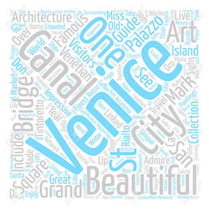

Veneza, a capital da região de Vêneto, no norte da Itália, é formada por mais de 100 pequenas ilhas em uma lagoa no Mar Adriático. A cidade não tem estradas, apenas canais (como a via Grand Canal), repletos de palácios góticos e renascentistas
🍕 🌉
🍕- Pizza é a comida mais conhecida em Itália, para além da lasagna e massa, sendo esta o prato mais conhecido em todo o mundo. E veneza é uma cidade em que não falta restaurantes a vende-la, 🌉 - Veneza é conhecida pelas suas pontes, que percorrem a cidade.
